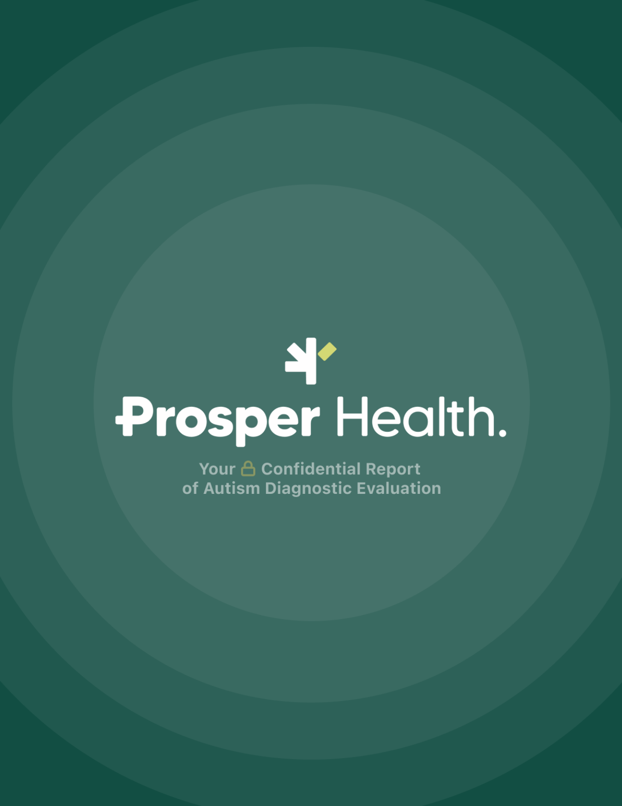
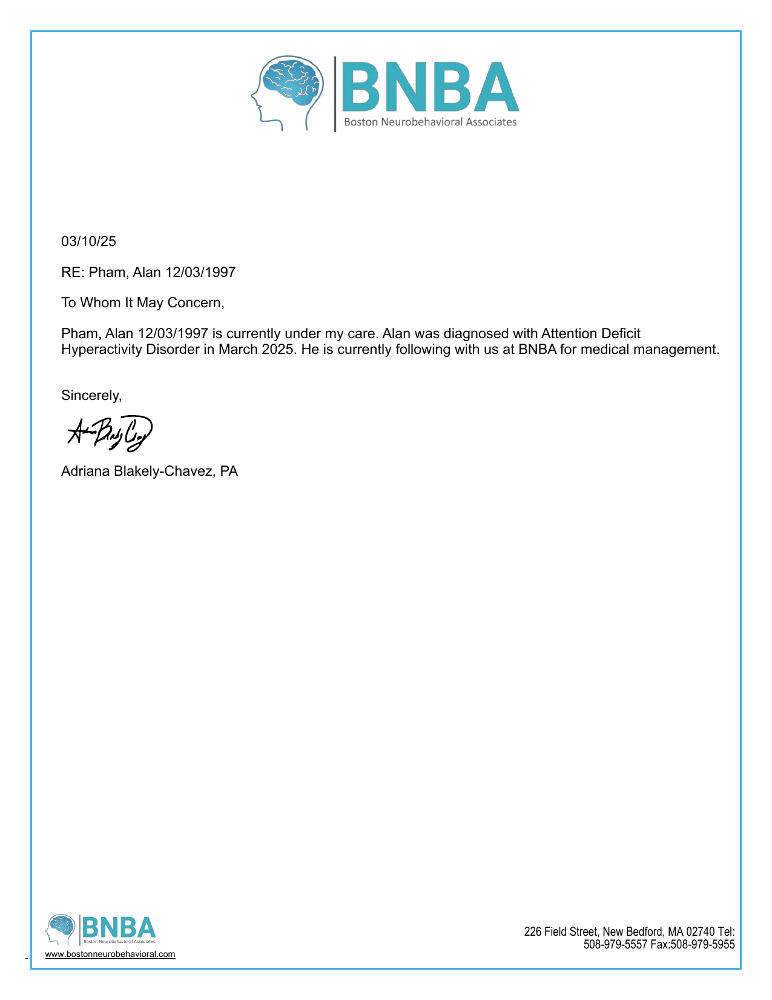

autism evaluation autism score 96/100 This is the formal diagnostic source, so it carries the bank. I am not making it 100 because it confirms autism without saying the highest support category. adhd score 26/100 This is mainly an autism diagnostic source. It can still matter as neurodevelopmental context, but it is not the ADHD proof document. disney score 88/100 "autism diagnostic evaluation" It gives the career system a formal support context instead of leaving accommodation needs implicit. The Disney score is built around formal context for accommodations, communication, and self-understanding. It is not a direct Imagineering move, but it changes how the system should support work and life. open downloadBrain PDF bank for documents, text, files, images, and goal-relevant thoughts.
overall autism score
calculating
overall adhd score
calculating
overall disney score
calculating
add to bank
Text becomes a PDF immediately as one flowing paragraph. Saved entries get autism, ADHD, and Disney/career reads when sync is connected.
checking sync

adhd letter autism score 34/100 This mostly documents ADHD and executive function. It belongs here as neurodivergent context, but it is weaker autism evidence by itself. adhd score 96/100 This is the formal ADHD source, so it carries the ADHD side of the bank without turning every later note into proof by itself. disney score 86/100 "Attention Deficit Hyperactivity Disorder" It names the executive-function context that can shape the work system around the career goal. The Disney score is built around executive-function context that can shape work, money, and daily-life support. It is a foundation document, not a standalone action. open downloadreferences
- Centers for Disease Control and Prevention. Autism Spectrum Disorder. Social communication, restricted or repetitive behavior, attention, movement, and support variation.
- Centers for Disease Control and Prevention. Clinical Testing and Diagnosis for Autism Spectrum Disorder. DSM-5 domains: social communication plus restricted/repetitive behavior, sameness, fixated interests, transitions, and sensory reactivity.
- National Institute of Mental Health. Autism Spectrum Disorder. Adult-readable examples include back-and-forth conversation difficulty, intense interests, transition difficulty, and sensory differences.
- National Institute for Health and Care Excellence. Autism spectrum disorder in adults: diagnosis and management, CG142. Adult assessment uses clinical judgement, context, functioning, and support needs.
- Hull L. et al. Putting on My Best Normal: Social Camouflaging in Adults with Autism Spectrum Conditions. Journal of Autism and Developmental Disorders, 2017.
- Centers for Disease Control and Prevention. ADHD in Adults. Adult ADHD can affect attention, lengthy tasks, organization, behavior control, and internal restlessness.
- National Institute of Mental Health. Attention-Deficit/Hyperactivity Disorder: What You Need to Know. Adult ADHD can involve inattention, restlessness, impulsivity, frustration tolerance, stress tolerance, and mood changes.
- National Institute for Health and Care Excellence. Attention deficit hyperactivity disorder: diagnosis and management, NG87. Adult ADHD recognition, diagnosis, management, and care quality.